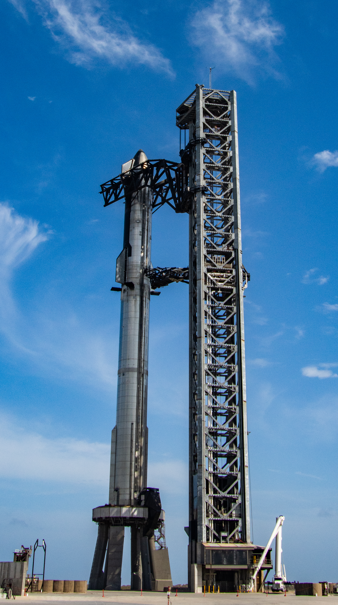
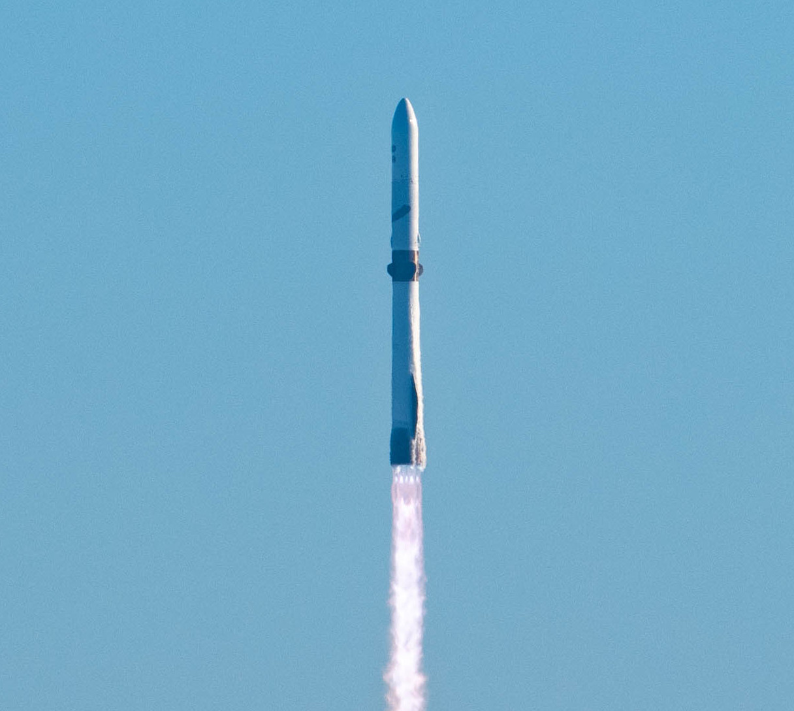

SpaceX
Starship
Starship este alcătuit din prima treaptă Super Heavy și nava Starship. SpaceX dezvoltă ambele componente pentru reutilizare și pentru zboruri spre orbită, Lună și Marte.
SpaceX — StarshipSpaceX, NASA și Blue Origin lucrează la rachete, misiuni lunare și stații spațiale. Printre proiectele lor se numără Starship, Artemis și New Glenn.
Misiuni planificate

SpaceX
Starship este alcătuit din prima treaptă Super Heavy și nava Starship. SpaceX dezvoltă ambele componente pentru reutilizare și pentru zboruri spre orbită, Lună și Marte.
SpaceX — StarshipNASA și partenerii
Artemis este programul NASA pentru revenirea astronauților pe Lună. SLS lansează capsula Orion, iar modulele de aselenizare vor transporta echipajul pe suprafață.
NASA — ArtemisBlue Origin
New Glenn este racheta orbitală a companiei Blue Origin. Transportă sateliți și alte încărcături, iar prima treaptă este construită pentru a fi refolosită.
Blue Origin — New Glenn| Proiect | Organizație | Rol |
|---|---|---|
| Starship | SpaceX | Transport spațial reutilizabil, în dezvoltare. |
| Artemis | NASA și partenerii | Explorare lunară cu astronauți. |
| New Glenn | Blue Origin | Lansarea încărcăturilor pe orbită. |
Datele măsurate de observatorul SOHO au fost convertite în sunet și accelerate pentru a fi auzite.